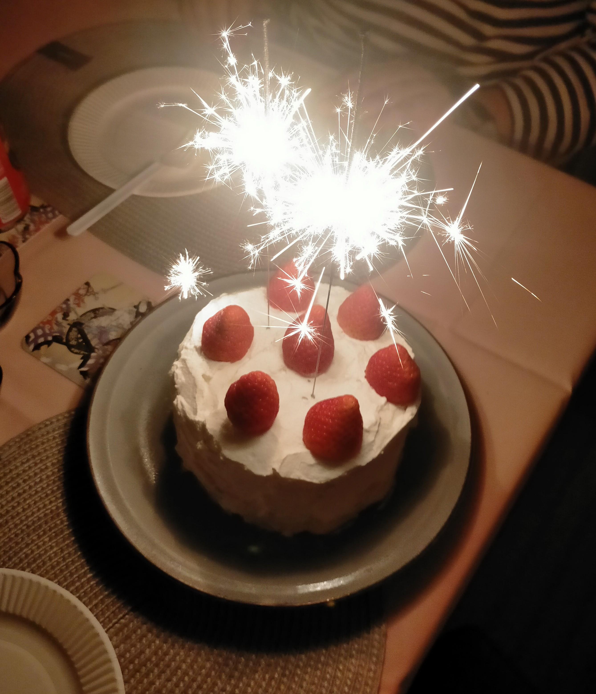

Strawberry-shortcake

- Strawberry-shortcake
- A perfect cake on birthdays!
Ingredience
- Sponge cake
- 2 eggs
- 80g granulated sugar
- 70g low gluten flour
- 20g unsalted butter
- 20cc milk
- Cream
- 200~300cc heavy cream(36%)
- 16~24g granulated sugar
- Decoration
- strawberries
- blueberries
- strawberry jam
- Prework
- Set the butter over a warm water bath and let it melt.
- Sift the low gluten flour.
- Pre-heat the oven to 170 degree C.
Steps
- Sponge cake
- Crack the eggs in the bowl. Add the sugar. Warm the bowl such as by putting another bowl underneath filled with hot water and mix them until it gets smooth and bubbles appear on the surface.
- Remove the bowl from the hot water. Continue mixing it with hand mixer until it becomes white and formy.
- Add the flour and gently mix with rubber spatula.
- Add one scoope of the mixture to the melted butter and milk. Mix and pour it back to the mixture of whipped egg and sugar.
- Mix the entire mixture with rubber spatula gently.
- Pour it to the cake pan(15 cm).
- Drop the cake pan on the kitchen counter couple of times to force the air in the mixture to come out in the surface.
- Put it in the oven and let it bake for about 25~30 minutes on 170 degree C.
- Let it out and cool down.
- Cream
- Add sugar and cream in to the bowl and set the over an ice water.
- Use the mixer to mix them well.
- Take some cream until it is soft for the inside of the cake and whip the rest of the cream until it is hard for the outside of the cake.
- Assemble
- Cut the sponge in to three layers.
- First spread the jam, then whipped cream, and put sliced strawberries.
- Put the sponge and repeat the above step.
- Put the last sponge and decorate as you like!